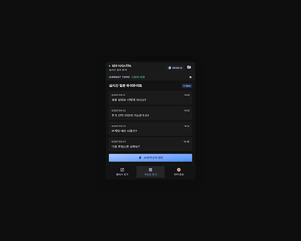
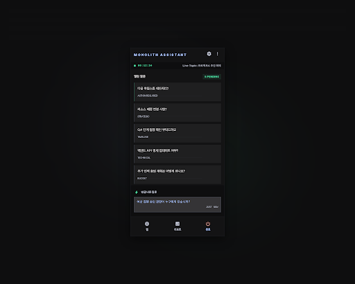
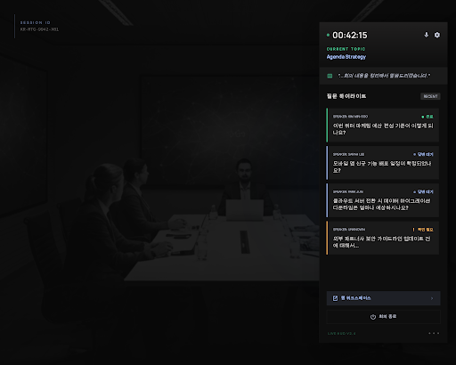
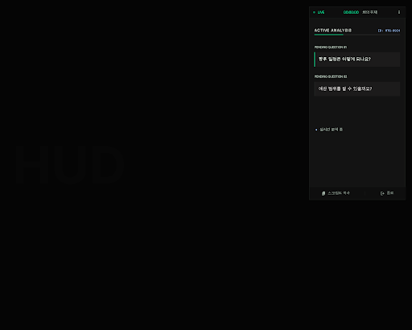

CAPS Overlay Stitch Variants
`+` 패널을 Quick Desk로 다시 잡기 위한 Stitch 시안 비교입니다.

A안 - 기본 Quick Desk
질문 보드를 중심으로 둔 기본형 플로팅 패널입니다.
HTML 보기
JSON 보기

B안 - 질문 집중형
질문 비중을 크게 높인 초미니멀 HUD형 패널입니다.
HTML 보기
JSON 보기

C안 - 자막 확장형
현재 자막 HUD와 연결감을 높인 caption companion 계열 시안입니다.
HTML 보기
JSON 보기

D안 - 초미니 Sidecar
회의 화면을 가장 덜 가리도록 폭과 무게를 줄인 stealth sidecar 시안입니다.
HTML 보기
JSON 보기